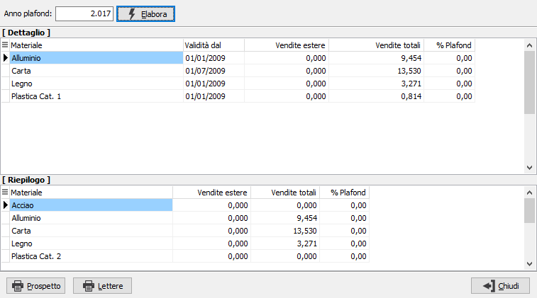
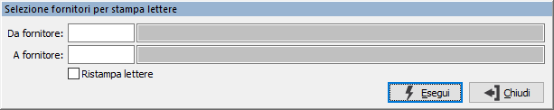

Prospetto attività export
Nel caso in cui il produttore venda prodotti all’estero è stata prevista la possibilità di calcolare e stampare il prospetto di calcolo del plafond (ex ante) da applicare per l’anno (sulla base delle vendite dell’anno precedente); è anche possibile stampare le lettere da inviare ai fornitori. La procedura richiede l'anno da elaborare e tramite il pulsante Elabora calcola i valori dell'anno precedente, oppure se già presenti richiede conferma per il ricalcolo; i valori vengono mostrati in modo analitico per tipo di materiale e data (nella prima griglia) ed in modo riepilogato per tipo materiale (nella seconda griglia).

I pulsanti presenti in basso consento di stampare il prospetto relativo al calcolo del plafond e le singole lettere ai fornitori interessati. Nel caso si stampino le lettere compare la finestra di selezione dei fornitori.

E' possibile selezionare un gruppo di fornitori per cui effettuare la stampa o la ristampa, se già stampata e si spunta la casella Ristampa lettere; al termine della stampa viene richiesto se si vogliono aggiornare le esenzioni per i fornitori per cui sono state prodotte le lettere, in caso affermativo i valori delle percentuali del plafond vengono assegnate ai fornitori come esenzione per l'anno richiesto a video.